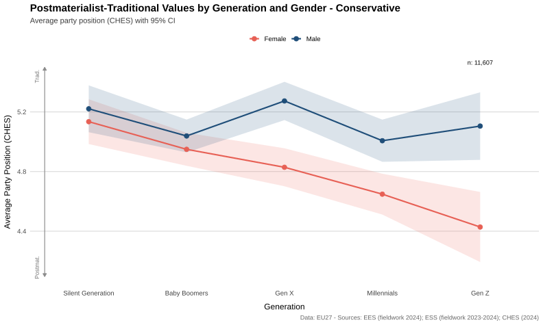
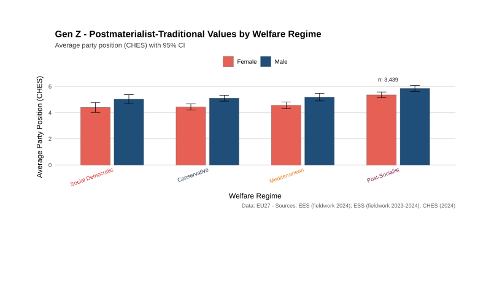
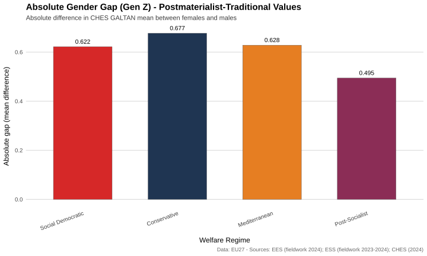
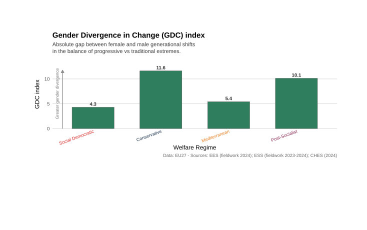

Public research companion
How gendered political polarization looks inside Europe’s Gen Z
A public-facing, English-language companion to my master’s thesis on the new cultural divide between young women and young men across the EU27.
This site stays close to the thesis. The figures shown here are the original final SVG outputs generated for the dissertation, while the interactive layer helps readers move across welfare regimes, compare exact values, and connect the visuals to the core argument in plain but accurate language.
EU27 pooled analysis
ESS + EES + CHES linkage
Welfare-regime comparison
Original thesis figures
What this page does
The goal is not to replace the dissertation, but to make one section of it easier to explore: the welfare-regime comparison in Chapter 4, where the Gen Z gender gap is examined through the GAL-TAN dimension.
Figure explorer
Use the shared regime selector to move across Conservative, Mediterranean, Post-Socialist, and Social Democratic Europe. The images remain exact copies of the thesis figures; the cards around them help interpret what is happening in the selected regime.
Figure 1. Welfare regimes as analytical contexts

Comment. The regime map matters because the thesis is not only asking whether a gender gap exists, but whether institutional context helps us understand where that gap widens, stabilizes, or changes shape.
Figure 2. Postmaterialist-traditional values by generation and gender

Comment. Loading...
Figure 3. Gen Z by welfare regime

Comment. Loading...
Figure 4. Absolute Gen Z gender gap

Comment. Loading...
Figure 5. Gender Divergence in Change (GDC) index

Comment. Loading...
Method in brief
The thesis links party choices recorded in the European Social Survey and the European Election Study to party-position estimates from the Chapel Hill Expert Survey, then compares those linked positions across generations, gender, and welfare regimes.
The regime analysis shown on this page corresponds to the final outputs generated by the thesis plotting workflow for Section 4.3. The interactive cards are derived from the same exported CSV files used to build the SVG figures, so the numbers and the images remain synchronized.
On the conceptual side, the page follows the thesis argument that welfare regimes should be read as broad comparative contexts, not as deterministic blocks. They help frame variation in social policy, labor-market structure, and civic culture, which in turn may shape political socialization.
Figure design reference
All charts shown here are adapted directly from the final thesis outputs generated by the regime-analysis script. This is why the site keeps the original title wording, captions, colors, and regime order instead of replacing them with a new design system.
APA references
The figure layer on this page is based on the thesis itself, on the final regime-analysis outputs, and on the data sources cited in the dissertation. The references below are the key ones for the figures and their comparative framing.
- European Social Survey European Research Infrastructure (ESS ERIC). (2025). ESS round 11 - 2023. Social inequalities in health, Gender in contemporary Europe. Sikt - Norwegian Agency for Shared Services in Education and Research. https://doi.org/10.21338/ess11-2023
- Popa, S. A., Hobolt, S. B., Van der Brug, W., Katsanidou, A., Gattermann, K., Sorace, M., Toygur, I., & De Vreese, C. (2024). European Parliament Election Study 2024, voter study (ZA8868; Version 1.0.0) [Data set]. GESIS, Cologne. https://doi.org/10.4232/1.14409
- Rovny, J., Bakker, R., Hooghe, L., Jolly, S., Marks, G., Polk, J., Steenbergen, M., & Vachudova, M. (2025). 25 years of political party positions in Europe: The Chapel Hill Expert Survey, 1999-2024 [Working paper].
- Esping-Andersen, G. (1989). The three political economies of the welfare state. Canadian Review of Sociology/Revue canadienne de sociologie, 26(1), 10-36. https://doi.org/10.1111/j.1755-618X.1989.tb00411.x
- Ferrera, M. (1996). Il modello sud-europeo di welfare state. Italian Political Science Review/Rivista Italiana di Scienza Politica, 26(1), 67-101. https://doi.org/10.1017/S0048840200024047
- Ghezzi Colombo, S. (2025). Masculinities, feminist mobilization and the new cultural divide: A quantitative analysis of gendered political attitudes among young Europeans [Master’s thesis, University of Milano-Bicocca].